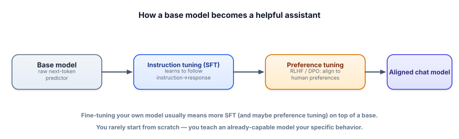

Instruction tuning
This is the most common kind of fine-tuning, and the one that turned raw next-token predictors into the helpful assistants you use every day. Understand it and you understand both how to specialize a model and how ChatGPT-style models are actually made.
From “continues text” to “follows instructions”
Recall from Track 1 that a base model just continues text — ask it a question and it might reply with more questions, because that’s a plausible continuation. Instruction tuning fixes this by training the model on many examples of instruction → good response, so it learns the behavior “when given a request, produce a helpful answer.” Modern assistants add a second phase that aligns them with human preferences. Here’s the pipeline that creates an assistant:

Supervised fine-tuning (SFT) trains the model on instruction→response pairs so it learns to produce the response given the instruction — the workhorse of instruction tuning. The data uses a chat template: the specific formatting (special tokens marking system/user/assistant turns) the model expects. Preference tuning — via RLHF (reinforcement learning from human feedback) or the simpler DPO (direct preference optimization) — further trains the model on comparisons (“response A is better than B”) to align tone, helpfulness, and safety with human preferences.
Instruction tuning is like teaching a parrot that already knows thousands of words how to answer questions instead of just repeating whatever it hears. You show it again and again: when someone asks this, the answer looks like that. Preference tuning is then giving it a treat for the better of two answers. The analogy breaks because a parrot learns from the treat in the moment, while a model learns only from what's in the examples, including their mistakes and their formatting tokens.
SFT is the QLoRA setup from Lesson 5.4 pointed at instruction/response data. The crucial detail is the chat template — TRL applies the model’s template so training matches inference.
from datasets import Dataset
from trl import SFTTrainer, SFTConfig
from peft import LoraConfig
# instruction → response pairs, as chat messages (Lesson 5.3 format)
rows = [
{"messages": [
{"role": "user", "content": "A customer is upset about a late order. Reply."},
{"role": "assistant", "content": "I'm so sorry about the delay — here's what I'll do..."},
]},
# ... a few hundred examples in YOUR tone and format ...
]
ds = Dataset.from_list(rows)
trainer = SFTTrainer(
model=model, # 4-bit base from Lesson 5.4
train_dataset=ds, # TRL applies the model's chat template
peft_config=LoraConfig(r=16, lora_alpha=32, task_type="CAUSAL_LM"),
args=SFTConfig(output_dir="sft-out", num_train_epochs=3, learning_rate=2e-4),
)
trainer.train()
# now the model replies in your taught style — without those examples in the promptAfter SFT, the model behaves the way your examples demonstrated — apologetic-then-actionable support replies, say — without needing those instructions/examples in every prompt. That baked-in behavior is the payoff of instruction tuning.
Assumptions: 8,000 curated support conversations (from Lesson 5.3). Each has a system message (150 tokens), a customer message (350 tokens) and an agent reply (250 tokens): 750 tokens per example.
- Tokens per epoch. 8,000 x 750 = 6 million tokens. Three epochs = 18 million.
- Which tokens carry the loss? TRL computes loss on the whole sequence for a conversational (messages) dataset unless you set
assistant_only_loss=True; for prompt-completion datasets it uses completion-only loss by default (TRL SFT docs). With full-sequence loss, only 250 / 750 = 33% of the loss comes from the replies you want to teach; the rest teaches the model to predict system prompts and customer messages. - Switch to assistant-only loss. 8,000 x 250 = 2 million loss-carrying tokens per epoch, all of them reply behaviour. TRL notes this needs a chat template with generation markers, which it patches automatically for some known families.
- Template and EOS. Qwen2.5 models use
<|im_start|>and<|im_end|>turn markers. TRL's docs warn that for a base model like Qwen2.5-1.5B you should seteos_token="<|im_end|>"so replies stop where the template says the turn ends. Skip that, and the model may keep generating past the reply. - Then maybe preference tuning. If reviewers can easily say which of two replies is better but can't write the perfect reply, collect 2,000 preference pairs and run DPO (arXiv 2305.18290) on top of the SFT checkpoint.
Each model family has its own chat template (the exact special tokens around turns). Training with the wrong template — or serving with a different one than you trained with — quietly wrecks results. Use the tokenizer’s built-in template (libraries like TRL do this for you) and serve with the same template you trained with.
- Instruction tuning (SFT) trains on instruction→response pairs so the model learns to follow requests.
- It’s how base models become assistants, and how you specialize behavior/tone for your task.
- Preference tuning (RLHF/DPO) aligns the model with human preferences using comparisons.
- Always use the correct chat template, and train in the exact format you’ll serve.
- After SFT, the taught behavior is baked in — no need to repeat it in every prompt.
You SFT a base model on Q&A pairs, but at inference you prompt it with a different chat format than you trained on. Results are oddly bad. Why?
Instruction tuning (SFT) turns a base model into…
You SFT on conversational 'messages' data with TRL defaults. What does the loss cover?
1. Explain to a teammate the difference between SFT and preference tuning (RLHF/DPO).
2. You want a model that writes release notes in your company’s exact voice. SFT, RLHF, or both? Why?
3. Why does instruction tuning let you shrink your prompts at inference?
▸ Show solutions & reasoning
1. SFT teaches the model to produce a good response by imitating example instruction→response pairs — it learns “what a right answer looks like.” Preference tuning (RLHF/DPO) goes further using comparisons between responses (“A is better than B”), nudging the model toward the more-preferred style/helpfulness/safety. SFT imitates demonstrations; preference tuning optimizes against human judgments of quality.
2. SFT is enough and is the right tool: a consistent voice/format is exactly what imitating good examples teaches. RLHF/DPO is heavier and aimed at nuanced preference trade-offs (helpfulness vs. safety, ranking among good answers) — overkill for “match this voice.” Start with SFT on a few hundred well-written release notes in your voice.
3. Because the behavior you’d otherwise have to specify with a long prompt (role, tone, format, examples) is now in the weights. The model defaults to that behavior, so you can drop most of the instruction/few-shot scaffolding from each call — saving tokens, cost, and latency on every request. You paid once in training to stop paying forever in prompt overhead.
SFT alone has a ceiling: it can only teach the model to imitate the responses you wrote, and writing a perfect demonstration for every situation is hard — sometimes it’s far easier to compare two responses than to author the ideal one. Preference tuning exploits this.
In RLHF, humans rank model outputs, a “reward model” learns to predict those rankings, and the model is then optimized to produce outputs the reward model scores highly — letting it discover good behavior beyond any single demonstration. DPO achieves a similar effect more simply, directly training on preferred-vs-rejected pairs without a separate reward model, which is why it’s become popular for teams doing their own alignment.
For your own projects, the practical takeaway is a ladder: SFT first — it’s simpler, cheaper, and solves most “make it behave like X” needs. Reach for preference tuning only when you need to optimize subtle trade-offs SFT can’t easily capture (nuanced helpfulness, refusing the right things, ranking among already-good answers) and you can collect preference comparisons. Most applied fine-tuning you’ll do is SFT with LoRA on a few hundred excellent examples — understanding RLHF/DPO mainly lets you reason about how the assistants you build on were aligned, and recognize when your task genuinely needs that extra machinery.
labs/11_lora_tiny.pyFree and offline once set up: Ollama with qwen2.5:7b, plus the packages in labs/README.md. From the course folder:
python labs/11_lora_tiny.pyWhat to look for: Print one tokenised training example and find where the prompt ends and the response begins; check which positions have label -100 (ignored) and which carry loss. Then generate from the trained adapter with the same template and with a different one, and compare: the mismatch is this lesson's chat-template gotcha at toy scale.
▸ Recorded output (our run, 2026-11-03, qwen2.5:7b on a laptop GPU)
base model: 798,848 params. Pre-training it on 'count UP' sequences (0123456789012...)
base loss count-up=0.097 count-down=10.885 <- it never saw 'down'
LoRA r=8 on attention + MLP: trainable=65,536 of 864,384 (7.6%)
after 0 LoRA steps: count-down loss=10.878 count-up loss=0.098
after 100 LoRA steps: count-down loss=0.100 count-up loss=9.747
after 200 LoRA steps: count-down loss=0.098 count-up loss=10.912
after 300 LoRA steps: count-down loss=0.097 count-up loss=10.695
frozen base tensors changed during LoRA training: 0 (expect 0)
adapter switched OFF: count-up loss=0.098 count-down loss=10.882 <- the old skill is back: forgetting lived in the adapter, not the base
saved adapter: 266 KB vs base model ~3120 KB in fp32
merge_and_unload: max logit difference after merging = 2.86e-06 (merged = same model, no adapter overhead)
Look: count-down loss falls while the base stays byte-identical. But count-up loss rose: with the adapter
on, the model forgot the old skill. That is why you eval BOTH the new task and the old ones (Lesson 5.6),
and why keeping adapters separate (swap or disable per task) is a real advantage of LoRA.Your numbers will differ a little run to run. Full log: labs/outputs. Source: labs/11_lora_tiny.py.
Warm-up. An example has 120 system tokens, 400 user tokens and 180 assistant tokens. What fraction of loss-carrying tokens is assistant behaviour with full-sequence loss, and with assistant-only loss?
▸ Solution
Full sequence: 180 / (120 + 400 + 180) = 180 / 700 = 25.7%. Assistant-only: 100% of loss-carrying tokens are assistant tokens, and there are 180 of them. With long prompts and short answers, full-sequence loss spends most of the gradient on text you never want the model to generate.
Transfer. Your SFT model gives good answers but then keeps going, inventing a new 'user:' turn and answering it. What's wrong and how do you fix it?
▸ Solution
The model never learned where a turn ends: the end-of-turn token in the template doesn't match the EOS token used in training or generation. Fix: make the tokenizer's eos_token the template's end-of-turn token (for Qwen2.5, <|im_end|>, which TRL's docs call out), make sure each training example ends with it, and pass it as a stop token at inference. Re-check by decoding a training example and looking at its last tokens.
Stretch. You have budget for either 5,000 more SFT examples or 5,000 preference pairs. The model's replies are accurate but often too long and slightly off in tone. Which do you buy, and how do you set it up?
▸ Solution
Preference pairs suit this case. The model already knows what to say; the problem is a subtle quality judgement (length, tone) that is easier to compare than to write perfectly. Generate two replies per prompt from the SFT model, have reviewers pick the better one by a written rubric (concise, warm, accurate), and run DPO starting from the SFT checkpoint with the same chat template. Evaluate reply length, rubric scores and accuracy against the SFT model, since preference tuning can trade accuracy for style if pairs reward tone alone. If the issue were missing knowledge or wrong format, more SFT would be the right buy.
Junior What is the difference between SFT, RLHF and DPO?
▸ Model answer
SFT trains on input-output demonstrations with next-token cross-entropy: the model imitates the good answers. RLHF, as in InstructGPT, trains a reward model on human rankings of outputs, then optimises the policy with reinforcement learning to score highly on that reward while staying close to the original model. DPO gets a similar effect directly from preferred-versus-rejected pairs with a classification-style loss and no separate reward model or RL loop, which makes it simpler and more stable to run. In practice: SFT first, then DPO if you have preference data and a quality gap that demonstrations don't fix.
Mid What is a chat template and how does it break fine-tunes?
▸ Model answer
A chat template is the exact text format, with special tokens, that turns a list of messages into the token sequence a model was trained on. For Qwen it uses im_start and im_end markers around each role. If training data is formatted with one template and inference with another, or the end-of-turn token isn't the EOS token, the model sees unfamiliar input. You get degraded answers, or replies that never stop and start inventing turns. I always format with the tokenizer's apply_chat_template, decode a training sample to check it by eye, and serve with the same template and stop tokens.
Senior Design an instruction-tuning project to turn a base model into an internal coding assistant for your company's frameworks.
▸ Model answer
Start with an instruct model, not a raw base, unless there's a strong reason, since it already follows instructions. Data: mine real internal questions and accepted answers from code review and support channels, plus expert-written examples for core frameworks, deduped and split by repository and time. Include examples that use retrieved docs in context, so the model learns to rely on RAG for API details instead of memorising them. Train LoRA SFT with assistant-only loss and the model's own chat template. Evaluate on held-out internal tasks with tests that execute, plus general coding and safety probes against the base. Add DPO later from developer thumbs-up and thumbs-down data. Version the adapter with the base model.
You’ve trained a model. The non-negotiable final step is proving it actually got better — without quietly breaking. Next: evaluating a fine-tune.